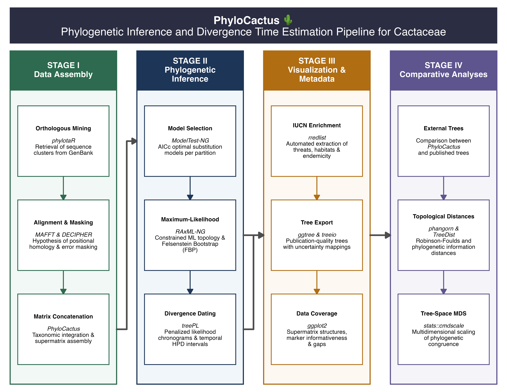

Welcome to PhyloCactus
PhyloCactus is an R package for assembling, curating,
and analysing multilocus molecular sequence datasets from publicly
available DNA sequences. The package integrates sequence retrieval from
GenBank, quality control, phylogenetic inference, divergence time
estimation, visualization, and validation into a single reproducible,
scientifically curated framework.
Constructing reliable multilocus molecular sequence matrices directly from public repositories such as GenBank presents a fundamental computational challenge in systematic biology. Sequence records deposited across decades frequently exhibit inconsistent locus annotations, duplicated accessions, unvouchered identifications, orthographic variants, and massive nomenclatural synonymies. Transforming these uncurated records into high-quality phylogenetic matrices requires intensive manual curation, taxonomic reconciliation against authoritative botanical checklists, and rigorous alignment quality control.
This computational problem becomes exponentially more complex when targeting plant lineages with intricate evolutionary histories. Clades characterized by recent explosive adaptive radiations, low plastid sequence divergence, incomplete lineage sorting (ILS), and ancient reticulate evolution amplify the risk of misidentifying orthology, accumulating systematic alignment noise, and producing biased topological reconstructions.
The family Cactaceae serves as the prime empirical exemplar of these combined computational and biological hurdles (Arakaki et al. 2011; Hernández-Hernández et al. 2014; Guerrero et al. 2019). Comprising one of the largest succulent plant radiations in the Neotropics, cactus phylogenetics requires extensive data curation to resolve persistent gene tree discordance and handle heterogeneous molecular datasets.
PhyloCactus was developed to transform this complex data
preparation and analytical process into a fully automated, transparent,
and reproducible R workflow. Rather than relying on manual ad hoc
scripts, PhyloCactus orchestrates established
bioinformatics software into a standardized 4-stage pipeline.
Why PhyloCactus?
Although established external software exists for individual analytical steps, manual integration of these tools often requires ad hoc computational scripts. This fragmented approach obscures methodological transparency, reduces analytical rigor, and impedes scientific reproducibility across independent studies.
PhyloCactus addresses this challenge by providing a
modular framework that strictly standardizes each analytical step
according to accepted systematic practices. By organizing the workflow
so that biological questions dictate methodological decisions, the
package ensures that outputs generated by one stage serve as documented
inputs for the next, guaranteeing computational reproducibility from
initial sequence retrieval to final topological inference.
Workflow Overview
The complete PhyloCactus workflow is organized into
four analytical stages comprising thirteen
interoperable modules.

Conceptual framework of the PhyloCactus pipeline
Each stage can be executed independently or combined into a fully reproducible phylogenetic workflow:
-
Data Assembly and Preparation (Modules 1 to 6):
Mined sequence clusters via
phylotaR, alignment of positional homology usingMAFFT, automated quality control masking viaDECIPHER, substitution saturation screening, taxonomic reconciliation against the Caryophyllales.org checklist, and concatenation into partitioned supermatrices. -
Phylogenetic Inference and Dating (Modules 7 to
10): Partition-specific substitution model selection using
ModelTest-NGunder AICc, constrained maximum-likelihood topology search usingRAxML-NG, Transfer Bootstrap Expectation (TBE) support mapping, temporal bootstrap generation, and penalized likelihood chronogram estimation usingtreePL. -
Visualization and Metadata Integration (Modules 11 and
12): Metadata enrichment linking phylogenetic trees with IUCN
Red List threat categories (
rredlist), collapsing weakly supported nodes (TBE < 0.70) into soft polytomies, and rendering manuscript-ready evolutionary figures. -
Validation and Sub-tree Comparisons (Module 13):
Quantitative tree comparison using Robinson-Foulds distances,
multidimensional scaling (MDS) tree-space ordination
(
validate_phylogenies), and multispecies coalescent species-tree estimation usingASTRAL-IIIto evaluate biological gene tree discordance.
Main Capabilities
The PhyloCactus framework integrates sequence
acquisition, data curation, evolutionary modeling, tree inference,
temporal calibration, metadata enrichment, and topological validation
into a single workflow. Specifically, the package automates the
retrieval of homologous DNA sequences from GenBank via
phylotaR, infers positional homology using
MAFFT, and applies objective quality control masking
through DECIPHER. Following taxonomic nomenclature
standardization and supermatrix concatenation, PhyloCactus
evaluates nucleotide substitution models using
ModelTest-NG, infers maximum-likelihood phylogenies with
RAxML-NG, and estimates divergence times under penalized
likelihood using treePL. Finally, the suite integrates
macroevolutionary conservation categories from the IUCN Red List
(rredlist), renders publication-ready tree visualizations,
and quantifies comparative topological agreement across alternative
phylogenetic hypotheses.
Installation
Install PhyloCactus
Install the development version directly from GitHub:
if (!requireNamespace("remotes", quietly = TRUE))
install.packages("remotes")
remotes::install_github("beeamerino/PhyloCactus")Verify that the package has been installed:
library(PhyloCactus)
packageVersion("PhyloCactus")R Package Dependencies
PhyloCactus relies on packages available from both CRAN
and Bioconductor:
| Repository | Main packages |
|---|---|
| remotes | phylotaR |
| Bioconductor |
DECIPHER, Biostrings
|
| CRAN |
ape, ggplot2,
dplyr, tidyr, readr,
stringr, purrr, rredlist,
forcats, scales,
RColorBrewer
|
Install the required Bioconductor packages using:
if (!requireNamespace("BiocManager", quietly = TRUE))
install.packages("BiocManager")
BiocManager::install(c("DECIPHER", "Biostrings"))phylotaR
phylotaR
(Bennett et al. 2018) is an automated R package that identifies
and downloads orthologous DNA sequences from GenBank by using BLAST
clustering instead of relying on inconsistent gene names. Install
phylotaR from GitHub via remotes using:
if (!requireNamespace("remotes", quietly = TRUE))
install.packages("remotes")
remotes::install_github('ropensci/phylotaR')External Software
Several analyses implemented in PhyloCactus rely on
external command-line software. These programs must be installed
separately and be available from your system PATH:
| Software | Purpose | Citation |
|---|---|---|
BLAST+ |
Local sequence alignment and database searching | Camacho, C. et al. (2009). BLAST+: Architecture and applications. BMC Bioinformatics, 10. https://doi.org/10.1186/1471-2105-10-421 |
MAFFT |
Multiple sequence alignment | Katoh, K., & Standley, D. M. (2013). MAFFT multiple sequence alignment software version 7: Improvements in performance and usability. Molecular Biology and Evolution, 30(4), 772–780. https://doi.org/10.1093/molbev/mst010 |
ModelTest-NG |
Model selection | Darriba, D. et al. (2020). ModelTest-NG: a new and scalable tool for the selection of DNA and protein evolutionary models. Molecular Biology and Evolution, 37(1), 291-294. https://doi.org/10.1093/molbev/msz189 |
RAxML-NG |
Maximum-likelihood phylogenetic inference | Kozlov, A. M. et al. (2019). RAxML-NG: A fast, scalable and user-friendly tool for maximum likelihood phylogenetic inference. Bioinformatics, 35(21), 4453–4455. https://doi.org/10.1093/bioinformatics/btz305 |
treePL |
Divergence time estimation | Smith, S. A., & O’Meara, B. C. (2012). TreePL: Divergence time estimation using penalized likelihood for large phylogenies. Bioinformatics, 28(20), 2689–2690. https://doi.org/10.1093/bioinformatics/bts492 |
Configuring the System PATH
If any executable cannot be detected by R, add its installation
directory to your system PATH. One convenient approach is
to edit your .Renviron file:
usethis::edit_r_environ()For example:
After saving the file, restart your R session so the updated environment variables become available.
Package Design
PhyloCactus follows a modular architecture in which each
function performs a single, well-defined analytical task. Outputs
generated by one stage become the documented inputs for the next stage,
allowing the pipeline to be executed sequentially while maintaining
complete computational transparency. This modular design ensures that
analyses can be resumed seamlessly from intermediate stages,
standardized output structures facilitate empirical reproducibility,
individual modules can be flexibly incorporated into custom phylogenetic
workflows, and debugging is simplified because each stage produces
independent, verifiable log files.
Typical Output Structure
Most pipeline stages generate standardized output directories containing FASTA sequence files, multiple sequence alignments, metadata tables, manifest files, partition files, Newick phylogenetic trees, and summary reports. Maintaining a consistent directory structure allows analyses to be restarted from any completed stage without repeating computationally intensive upstream steps.
Learning Pathway
The recommended way to learn PhyloCactus is by
completing the tutorials in sequence:
| Tutorial | Description |
|---|---|
| Tutorial 1 | Data Assembly and Preparation |
| Tutorial 2 | Phylogenetic Inference and Divergence Time Estimation |
| Tutorial 3 | Visualization and Metadata Integration |
| Tutorial 4 | Phylogenetic Validation and Comparative Analyses |
| Function Reference | Complete reference of package functions |
Next Steps
Once PhyloCactus and its external dependencies have been
successfully installed, continue with Tutorial
1: Data Assembly and Preparation, where you will assemble a curated
multilocus dataset directly from GenBank using the complete data
preparation workflow implemented in the package.
References
- Arakaki et al. 2011. Contemporaneous and recent radiations of the world’s major succulent plant lineages. Proceedings of the National Academy of Sciences of the United States of America, 108(20), 8379–8384. https://doi.org/10.1073/pnas.1100628108
- Bennett et al. 2018. Phylotar: An automated pipeline for retrieving orthologous DNA sequences from GenBank in R. Life, 8(2), 20. https://doi.org/10.3390/life8020020
- Hernández-Hernández et al. 2014. Beyond aridification: Multiple explanations for the elevated diversification of cacti in the New World Succulent Biome. New Phytologist, 202(4), 1382–1397. https://doi.org/10.1111/nph.12752
- Guerrero et al. 2019. Phylogenetic Relationships and Evolutionary Trends in the Cactus Family. Journal of Heredity, 110(1), 4–21. https://doi.org/10.1093/jhered/esy064